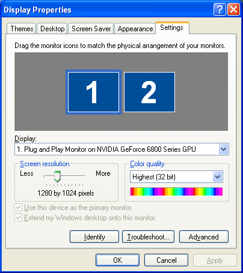
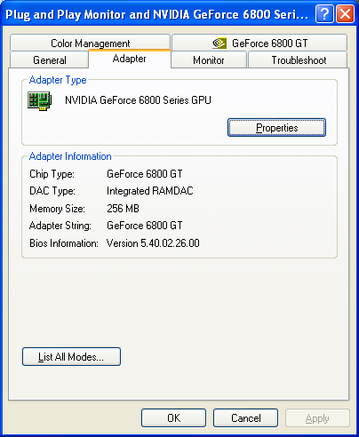

<!--#set var="title" value="Graphics Driver Troubleshooting"-->
<!--#include virtual="/meta_incl.html"-->
<!--#include virtual="/header_incl.html"-->

<table width="756"><tr><td>

<p>Howdy pardner! Looks like yer havin' some trouble gettin' Bang! Howdy up and
runnin' on yer computer. Well we're here ta give ya a hand. The first thing yer
gonna want to do is make sure yer graphics drivers are up to date.</p>

<ul>
<li> If yer a Windows user, follow the instructions below. </li>

<li> If ya have a Macintosh then ya should automatically have the latest
drivers. Ya need to be runnin' <em>MacOS X 10.4.2 or later</em>. We
unfortunately can't support earlier versions as they don't run the version of
Java that we need. </li>

<li> If ya are runnin' Linux then things are a darned sight more complicated.
Yer just gonna have to head over to
<a href="http://forums.banghowdy.com/townhall/mvnforum/listthreads?forum=2">the
forums</a> and ask the friendly folks over there fer help. </li>

</ul>

<p><span class="posttitle">Windows Instructions</span><br/>
Click the <b>right mouse button</b> on yer desktop background (make sure yer
not over any window) and a menu will pop up. Select <b>Properties...</b> from
that menu and a window will pop up. Click the <b>Settings</b> tab and you'll
see something like this:
</p>

<p align="center"></p>

<p>Then click the <b>Advanced</b> button down there in the lower right and
the window will change. There will be tabs across the top, click on
<b>Adapter</b> and you'll see a window that looks like this:</p>

<p align="center"></p>

<p>This is where things get a bit tricky. The <b>Adapter Type</b> should tell
ya what sort of graphics card ya have. Depending on what it says here, yer
gonna have to go to the manufacturer's website to get the latest drivers fer
yer graphics card.</p>

<ul>
<li> If it says NVIDIA or GeForce go to 
<a href="http://www.nvidia.com/content/drivers/drivers.asp">NVIDIA's download
site</a>. </li>

<li> If it says ATI or Radeon then go to
<a href="https://support.ati.com/ics/support/default.asp?deptID=894&task=knowledge&folderID=27">ATI's
download site</a> </li>

<li> If it says somethin' else, then you'll have to ask the friendly folks on
<a href="http://forums.banghowdy.com/townhall/mvnforum/listthreads?forum=2">the
forums</a> where to go to download drivers fer yer card. </li>
</ul>

<p> Once ya get yer new drivers installed and you've done all the necessary
rebootin', try runnin' the game again. If it still don't work then you'll have
to post to
<a href="http://forums.banghowdy.com/townhall/mvnforum/listthreads?forum=2">the
forums</a> and we'll try to get ya sorted out.</p>

</td></tr></table>

<!--#include virtual="/footer_incl.html"-->
